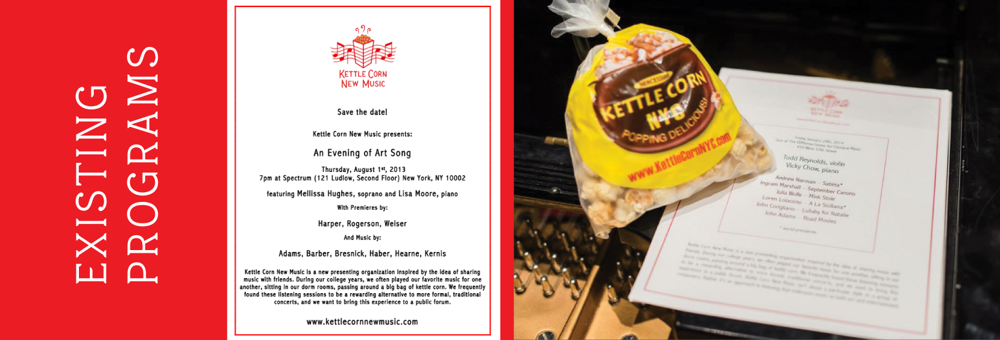
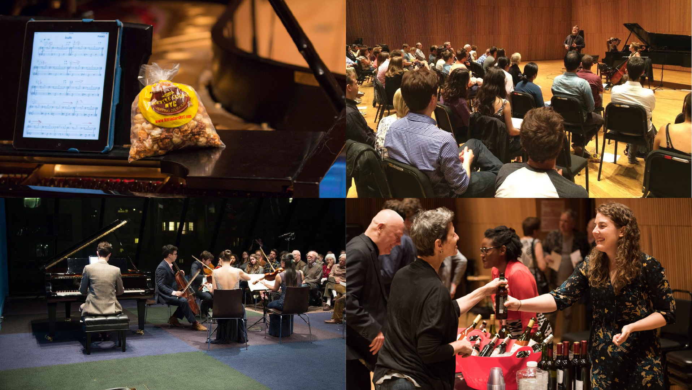
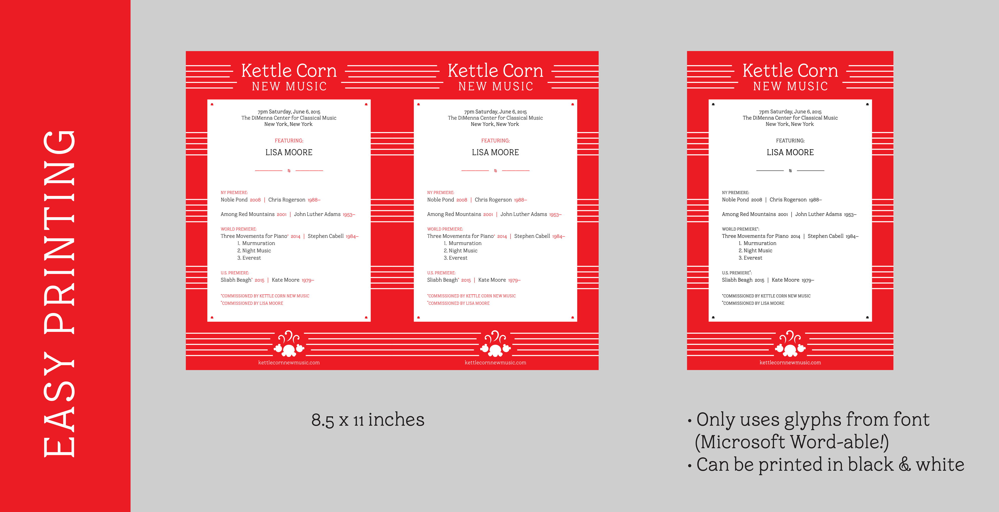

Kettle Kern is an optically monoweight serif font, designed for Kettle Corn New Music (KCNM), a casual and contemporary classical music concert series. It takes cues from old-fashioned kettle corn typography and classical music. Kettle Kern works for both body text and display, and includes oldstyle, lining and tabular numerals.
The Situation
Classical music programs are often unexciting laser prints that the audience leaves on the floor of after a concert. I wanted to make unique programs that audiences would want to bring home, in order to augment KCNM’s light-hearted but high-quality concert experience.
Audience
KCNM is intended for both the elite classical music audience, as well as the casual listener. It’s based out of New York City.
Role
This was an individual project I worked on at SVA’s Type as Language Summer Residency in 2014. I worked closely with the founders of KCNM, while receiving advice from the SVA instructors, James Montalbano, Dan Rhatigan, Tobias Frere-Jones, and Jessica Hische.

Constraints
This project was constrained both by the length of the SVA program—we had to design a typeface and apply it in 4 weeks—as well as an impending KCNM concert a few weeks later. Since KCNM is a non-profit organization in its nascent stages, economy was important. The programs needed to be easily printable. Classical concert programs in general need to display the performers, the works performed, the composers, time, location and venue, while showing they are part of the KCNM concert series.

Process
The bulk of this project was designing the custom typeface, while learning FontLab. I analyzed carnival, circus and popcorn-inspired typography and brands, as well as musical notation, which functions as its own sort of language. I found an interesting similarity: both the carnival and musical sources had a precedent of ball-terminals on letters like C, r, and s.
Originally, I went for a more circus-inspired look with swashes and flourishes, but found this too old-fashioned and opted for serif terminals in most cases. I spent a lot of time smoothing curves and making the widths look monoweight. I also was inspired by the vast number of musical symbols to include some extra glyphs, like the false harmonic and mordent.

The programs use the traditional red and white colors of kettle corn bags, and stripes, which show up on popcorn cartons as well as on the music staff. They are designed with a frame that can be reused and mass-printed for efficiency. Because I included so many symbols in Kettle Kern, KCNM can type out the programs in Word and run it through the printer. The programs fit two to a letter-size sheet of paper, making them a cheap and easy size to print, and more distinctive than a normal letter-size sheet.
At one point, I intended to print the program straight onto a paper kettle corn bag. This became impractical, however, both because it was more inconvenient—they get kettle corn in small pre-wrapped plastic bags from Kettle Corn NYC—and because kettle corn is greasy! Additionally, unlike a flat program, a greasy bag is less intriguing for someone to take home as memorabilia, and more likely to be thrown in the trash.
Thoughts
Designing a typeface is hard! I’m happy with the final product, but it was the result of 8 hours a day for 4 weeks, and that was with only a limited amount of kerning and testing at different sizes, and a single weight. When using Kettle Kern for the programs, I sometimes find myself wishing for a bold or, more often, an italic, but each of those would take almost as long to create.
I learned a great deal not only about creating my own typeface, but also evaluating others for wonky curves, bad kerning and cohesion. My eye is much more refined and well attuned to spotting stretched or compressed fonts by examining their relative widths of horizontals and verticals. I would say this project was quite instrumental in my design training!